OBS does the work
obscura drives the OBS you already have through its built-in WebSocket server. Your scenes, sources and encoder settings stay in OBS; nothing is re-implemented.
for OBS Studio · Quickshell · Hyprland
A small circle in your bar that opens into a pill while you record, a panel for the details, and a shortcut that works from anywhere. OBS keeps doing the recording; obscura only holds the remote.
git clone https://github.com/lunanoir21/obscuraHow it works
obscura drives the OBS you already have through its built-in WebSocket server. Your scenes, sources and encoder settings stay in OBS; nothing is re-implemented.
A small Rust binary watches OBS and prints state as JSON lines. The Quickshell module reads them and draws the pill. If one dies, the other is unaffected.
The red dot lights only when OBS says the recording started. If OBS is closed, the server is off or the password is wrong, the pill says so instead of pretending.
The panel
The panel is drawn in Turkish; the labels follow your system language in a later version.
Details
obscura toggle works with the bar closed. If OBS is closed too, it opens it in the background and starts recording.
Click the pill while OBS is closed and it starts minimised to the tray. A second copy is never launched.
A notification, optionally the path on the clipboard, and any executable you drop in ~/.config/obscura/hooks/saved.d/.
OBS sends about 50 level events a second. obscura thins them to a dozen and only while the panel is open.
Blink instead of a constant fade, a window that never resizes mid-animation, and a panel that exists only while it is open.
The timer can be Space Mono or the dot-matrix Doto, at any size from 10 to 32 px.
Screen-share picker
On Wayland, OBS asks the desktop portal which screen or window to capture, and the stock dialog does not look like anything else on your desktop. obscura can answer that question itself, with a card drawn by your Quickshell setup.
It is optional and safe: if the widget is not running, the stock dialog appears. One caveat: the portal does not say who is asking, so every app's share request, browser and Discord included, uses this card.
obscura picker-setup install
systemctl --user restart xdg-desktop-portal-hyprland
# back to the stock dialog:
obscura picker-setup uninstallInstall

In OBS: Tools → WebSocket Server Settings → Enable. Needs OBS 28 or newer.
git clone https://github.com/lunanoir21/obscura
cd obscura && cargo build --release
ln -s "$PWD/target/release/obscura" ~/.local/bin/obscura
obscura doctorPlace the module in your Quickshell config and drop the pill where you want it. pal is your colour object, u your scale unit.
import "vendor/obscura/ui" as Obscura
Obscura.ObscuraPill { pal: mocha; u: barWindow.s(1) }
// once, anywhere in the shell:
Obscura.ObscuraPickerHost {}bind = SUPER ALT, R, exec, obscura toggle
bind = SUPER ALT SHIFT, R, exec, obscura pauseBuilt and tested on Hyprland with OBS Studio 32 and Quickshell 0.3. Other setups are untested.